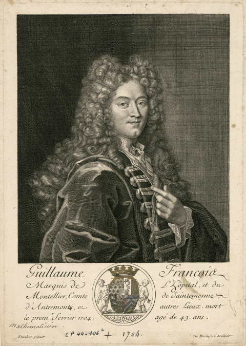
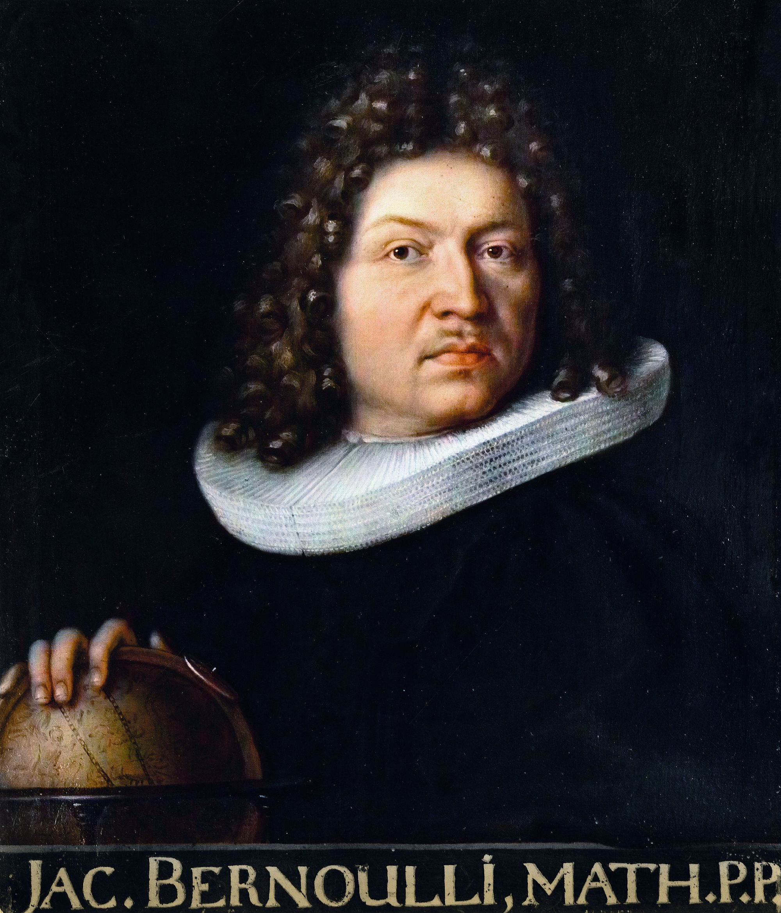

\(\int\) Calculus of Variations
Group Theory
MATH0043 Part 2
John Talbot j.talbot@ucl.ac.uk
Press → or click Next to begin
Symmetry
Noether's Theorem
In any physical system with a continuous symmetry there is a conserved quantity.
Spatial translation symmetry → conservation of momentum
Time translation symmetry → conservation of energy
Rotational symmetry → conservation of angular momentum
Calculus of Variations
Imagine you need to connect two points \(A\) and \(B\) with a curve.
But not just any curve—the optimal one.
- What if you want the shortest path ?
- What if you want the fastest descent under gravity?
- What if you want to maximize the area under the curve (subject it having a fixed length)?
Arc Length of Curves
Which curve from \((0,0)\) to \((1,1)\) has the shortest arc length?
The Brachistochrone Problem
📜 Johann Bernoulli, 1696
"Given two points A and B in a vertical plane, what is the curve traced out by a particle which, starting from A, reaches B in the shortest time under gravity?"




The Race!
Which curve is fastest?
Results
| # | Medal | Path | Time |
|---|
The Cycloid
A cycloid is the curve traced by a point on a rolling circle:
Tautochrone Demonstration
Particles on an inverted cycloid
Four particles start at different positions on the same inverted cycloid.
Results
| # | Medal | Particle | Time |
|---|
Soap Bubbles
Surfaces in Calculus of Variations
Dido's Problem
Maximize the area bounded by a curve of length \(\ell\) from \(A = (-1,0)\) to \(B = (1,0)\) above the \(x\)-axis:
with boundary conditions \( y(-1) = 0, y(1) = 0 \).
The optimal solution is a circular arc passing through \((-1,0)\) and \((1,0)\).
Applications
Physics
Principle of Least Action
Engineering
Structural Optimization
Economics
Optimal Control
Machine Learning
Variational Methods
From Functions to Functionals
Ordinary Calculus
Find numbers \(x\) that optimize functions \(f(x)\)
Minimize \(f(x) = x^2 - 4x + 3\)
Solution: \(f'(x) = 0 \Rightarrow x = 2\)
Calculus of Variations
Find functions \(y(x)\) that optimize functionals \(I[y]\)
Minimize \(I[y] = \int_0^1 \sqrt{1 + (y')^2} \, dx\)
Solution: A straight line!
Functionals
In ordinary calculus: optimize over numbers
In calculus of variations: optimize over functions — an infinite-dimensional space!
Instead of finding the best point , we're finding the best curve or path .
What is a Functional?
Definition
A functional is a rule that assigns a number to each function :
where \(\mathcal{F}\) is some space of functions.
Input: a function \(y(x)\) → Output: a single number
Examples of Functionals
Arc Length
Input: a curve
Output: its length
Surface Area
Input: curve to revolve
Output: surface area
Action (Physics)
Input: path \(q(t)\)
Output: action
The Standard Problem
We focus on functionals of the form:
with boundary conditions : \(y(a) = A\), \(y(b) = B\)
\(y = y(x)\) — the unknown function we seek
\(y' = dy/dx\) — its derivative
\(F(x, y, y')\) — a given function of three variables
The Euler-Lagrange Equation
Theorem (Euler-Lagrange Equation)
If \(y(x)\) is an extremal of \(I[y] = \int_a^b F(x, y, y') \, dx\), then:
Often written as: \(F_y - \frac{d}{dx}{F_{y'}} = 0\)
Candidate Extremals
Definition
A function \(y(x)\) is a candidate extremal if it satisfies the Euler-Lagrange equation.
| Ordinary Calculus | Calculus of Variations |
|---|---|
| Critical point: \(f'(x^*)=0\) | Candidate: E-L satisfied |
| Could be max, min, saddle | Could be max, min, neither |
⚠️ Warning
A candidate extremal is not necessarily a minimum or maximum—it's a stationary point of the functional.
The Idea of Variations
Consider small perturbations of a function \(y\):
- \(\epsilon\) — small parameter
- \(\eta(x)\) — smooth "test function"
- \(\eta(a) = \eta(b) = 0\) — preserve BCs
Fundamental Lemma of CoV
Fundamental Lemma of CoV
If \(M(x)\) is continuous on \([a,b]\) and
for all smooth \(\eta\) with \(\eta(a) = \eta(b) = 0\), then:
Derivation Sketch
Let \(y(x)\) be an extremal of \(I[y] = \int_a^b F(x, y, y') \, dx\).
Let \(\eta\) be a smooth test function satisfying \(\eta(a) = \eta(b) = 0\).
For \(\epsilon\) small, let \(y_\epsilon (x) = y +\epsilon \eta \), then \[y'_\epsilon = y' + \epsilon \eta',\qquad \frac{d y_\epsilon}{d \epsilon} = \eta \qquad \frac{d y'_\epsilon}{d \epsilon} = \eta'.\]
Special Case: First Integral
First Integral
If \(\frac{\partial F}{\partial y} = 0\), then the E-L equation becomes:
This integrates immediately to give:
where \(C\) is a constant of integration.
Deriving the Arc Length Functional
Consider a curve \(y = y(x)\) from \((a, A)\) to \((b, B)\).
\(F = \sqrt{1 + (y')^2}\) doesn't depend on \(y\)!
Shortest Path in the Plane
Problem: Minimize arc length from \((0,0)\) to \((1,1)\)
Deriving Path Length on a Cylinder
Cylindrical coords: \((r, \theta, z)\) with \(r = 1\).
\(F\) doesn't depend on \(\theta\) — First Integral!
Geodesics on a Cylinder
Find the shortest path on a cylinder of radius 1.
Deriving Path Length on a Sphere
Spherical coords: \((r, \theta, \phi)\) with \(r = 1\). So \(\theta\) is the angle down from the z-axis, and \(\phi\) is the azimuthal angle in the xy-plane.
Example: Geodesic on a Sphere
Find the shortest path on a sphere of radius 1.
Deriving Kepler's Second Law
Kepler's Second Law
A line joining a planet and the Sun sweeps out equal areas in equal times.Hamilton's Principle of Least Action
The path a physical system takes between two fixed points in time extremizes the action:
where \(L\) is the Lagrangian of the system.
For a particle of mass \(m\) under central potential \(V(r)\) use the Lagrangian in polar coordinates:
Note that \(L\) has no explicit \(\theta\)-dependence!
There are two Euler–Lagrange equations (one for each generalized coordinate):
The angular equation is a First Integral since \(\partial L/\partial \theta = 0\):
The lack of \(\theta\)-dependence in \(L\) corresponds to a rotational symmetry of the system, which implies conservation of angular momentum. (This is Noether's theorem in action!)
Kepler's Second Law
Angular momentum is conserved: \[ mr^2\dot{\theta} = h \quad\text{(constant)}\]
The Two-Body Problem
Two masses \(m_1, m_2\) interacting via gravity.
Lagrangian in inertial frame:
Reduce to relative coordinate \(\mathbf{r} = \mathbf{r}_1 - \mathbf{r}_2\):
The Three-Body Problem
Choreographies and Chaos
Three point masses interacting via gravity.
- No general closed-form solution (Poincaré).
- Exhibits deterministic chaos.
- Highly symmetric solutions exist (e.g., figure-8).
The Four-Body Problem
Complex Periodic Choreographies
Beyond three bodies, periodic solutions become even more intricate.
- Stable choreographies on closed curves.
- Numerical stability requires high precision.
The Beltrami Identity
A powerful shortcut when \(F\) doesn't depend on \(x\)
Beltrami Applies ✓
- \(F = \sqrt{1 + (y')^2}\)
- \(F = y\sqrt{1 + (y')^2}\)
- \(F = (y')^2 + y^2\)
No explicit \(x\) dependence
Beltrami Does NOT Apply ✗
- \(F = x(y')^2\)
- \(F = xy + (y')^2\)
- \(F = e^x\sqrt{1 + (y')^2}\)
Contains explicit \(x\)
Beltrami Identity
Theorem
If \(F = F(y, y')\) (no explicit \(x\)), then any candidate extremal satisfies:
where \(C\) is a constant.
Euler-Lagrange: 2nd order ODE
Beltrami: 1st order ODE — usually easier!
Setting Up the Problem
By conservation of energy:
Time functional:
✓ \(F\) doesn't depend on \(x\) → Use Beltrami!
Isoperimetric Problems
Optimization with constraints
Find \(y(x)\) that extremizes:
subject to the constraint :
Classic example: Of all curves with perimeter \(L\), which encloses maximum area?
Lagrange Multipliers for Functionals
Method
Form the augmented functional :
Solve E-L for \(H = F + \lambda G\), then use constraint to find \(\lambda\).
Result: Maximum area with fixed perimeter → Circle!
What We've Learned
Foundations
- Functionals map functions → numbers
- Candidate extremals are stationary points
- FLCV is the key lemma
Main Tools
- Euler-Lagrange equation
- Beltrami Identity (no \(x\))
- Lagrange multipliers
Classic Problems
- Geodesics → straight lines
- Brachistochrone → cycloid
- Isoperimetric → circle